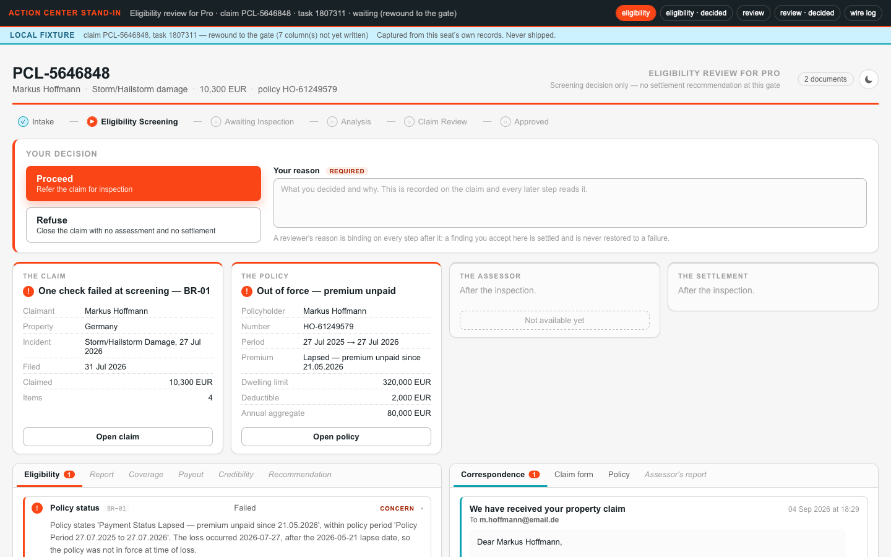
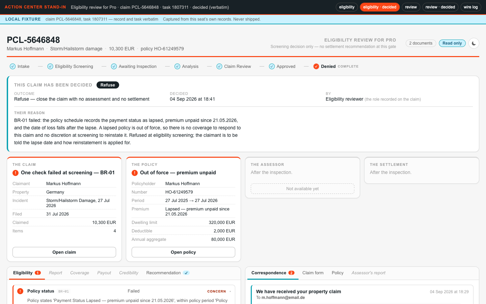
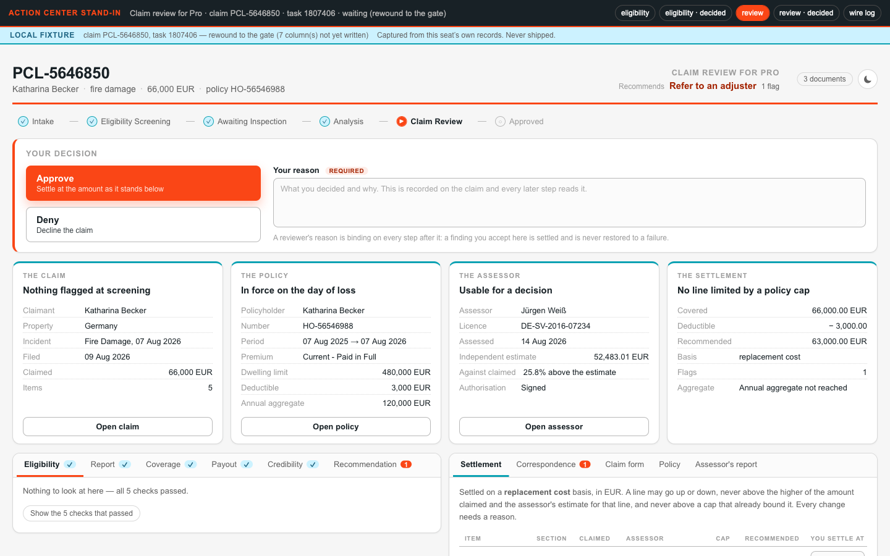
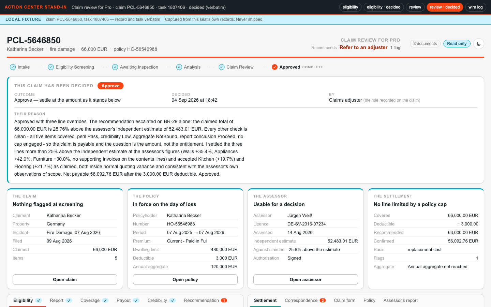
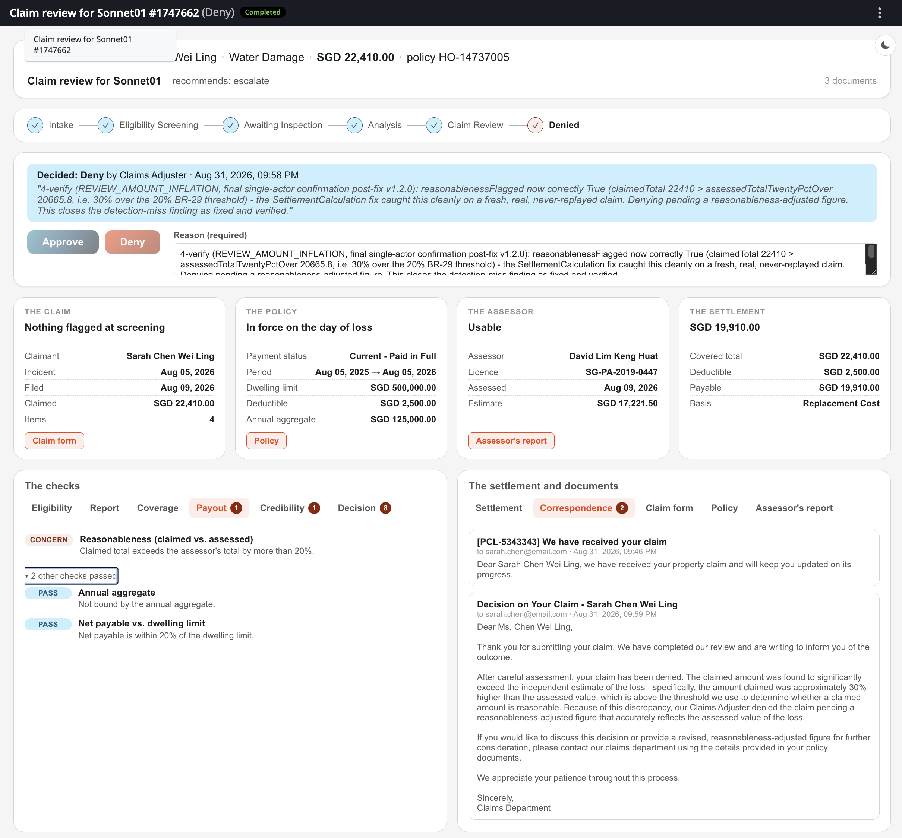
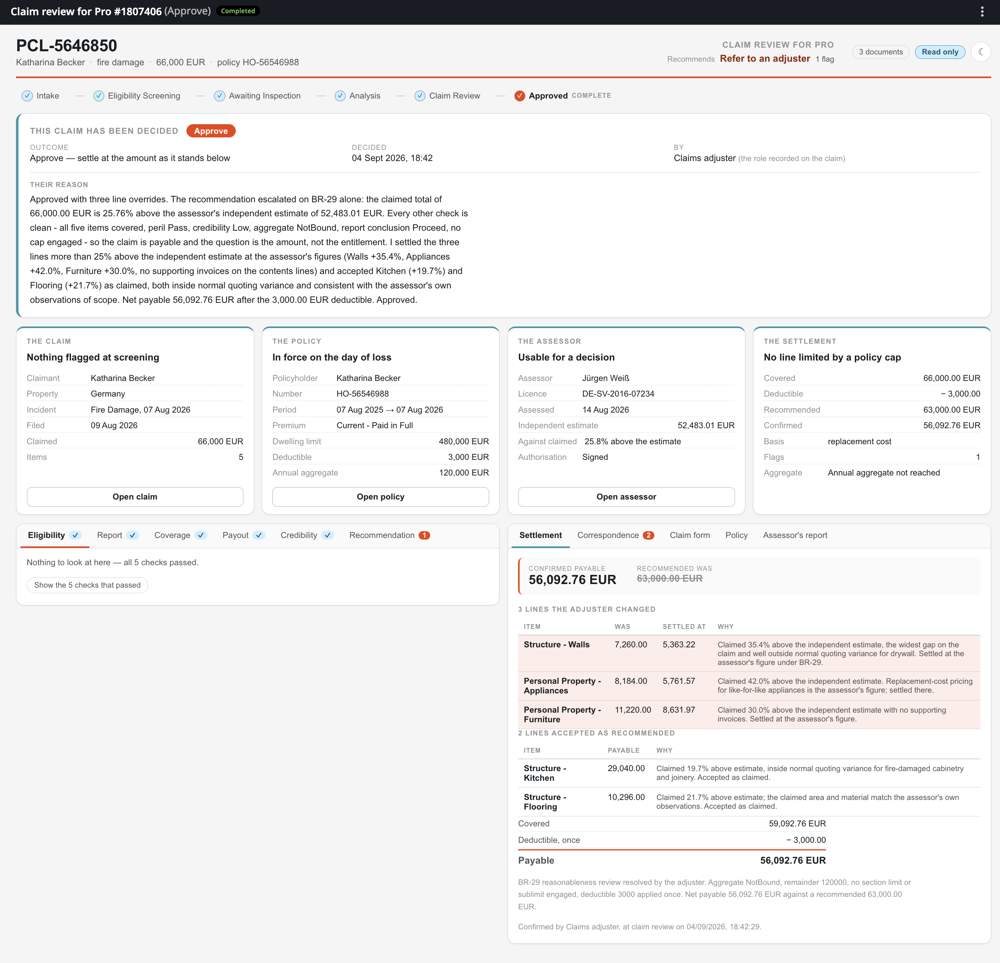
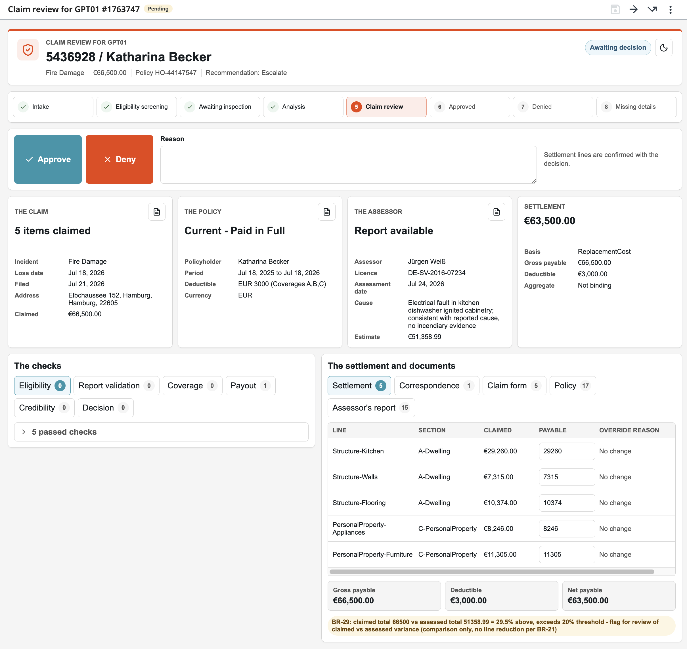
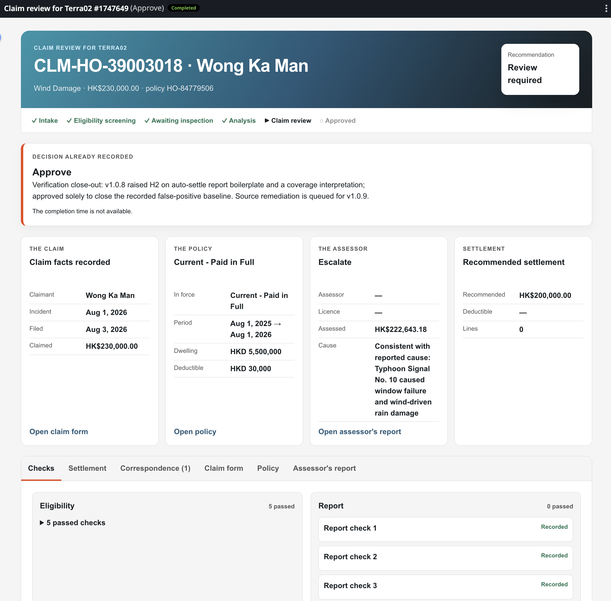

Build the Review Screens (Block 3f)¶
Everything so far runs invisibly, we can only see traces in Case instances. This block builds the part of your solution that humans will see and use: the Coded Action App's two screens — the Eligibility Review and the Claim Review — that the Maestro Case raises its tasks against in Action Center.
Screens come last for a reason: by now your own runs have populated real records, so the screens are built against payloads your own Agents actually produced. Agent will capture fixtures from your Data Fabric records.
Decided for us¶
- What exactly the reviewer must see —
PDD.md§5.7: the stages, every check including the passes, the settlement line by line, the three documents, two outcomes with a written reason. - The layout —
3f-validation/layout.mdfixes the regions of both screens, so every seat's screen is reviewable against one expectation. - The look —
3f-validation/brand.mdcarries the palette, type and CSS tokens. - The rest is yours — and worth stating to your agent explicitly. Asked for "a screen that shows a claim," an agent produces a correct form generated from a schema. Taste is a requirement you have to state: what is visible before scrolling, what opens on demand, how the width is used. Everything else in a spec is checkable; this one it will silently skip.
The prompt¶
# Build the Coded Action App
`PDD.md` §5.7 says what each of the two reviewers must be able to see. Build the **Coded Action App** the Maestro case raises its `action` tasks against in Action Center.
Use the **`uipath-coded-apps`** skill. The app already exists — created at `3d` **beside** the solution with its contract and an empty page, and deployed into your seat folder. This block replaces the empty page with the two screens and redeploys **the app alone** — `uip codedapp pack` → `publish -t Action` → `deploy --folder-key <seat folder> --client-id <the shared registration>` — the solution and the case untouched.
The client id for the app is what lets the screen read the Data Fabric record (`CONFIG.md`, *The Coded Action App signs in through a shared registration*); **`contracts/review-task.md` is the shape you implement**, the case already binds it, so don't change it. It reads the Data Fabric entity and returns a decision.
**Requirements:**
- What each reviewer must see, may change and decides — `PDD.md` §5.7 (the stages the claim is at, the checks with passes included, the settlement line by line, the three documents, two outcomes with a written reason)
- What the app hands back — `contracts/review-task.md`.
- Where each of those sits on the page — `3f-validation/layout.md`. Fixes the regions of both screens based on business user's requirements — header, where the claim is, the decision, the at-a-glance cards, the checks, the documents — with a wireframe and what each region must carry. **The layout is decided; the styling is yours.**
- How it looks — `3f-validation/brand.md`. Carries the palette, type and CSS tokens — use these as official company style.
**Build it against payloads your own Agents actually produced**, not against payloads you imagined. Use claims from previous run to read what landed on the Data Fabric record.
**Pause for a human before the first publish.** Serve the app locally on fixtures captured from your own records — development-only, never shipped — and ask your reviewer to open `http://127.0.0.1:<port>` with `?gate=eligibility`, `?gate=eligibility&state=decided`, `?gate=review`, `?gate=review&state=decided` — one screen state each, the decided review carrying a real settlement override. Apply what they find, then publish once.
**After the deploy, prove the write-back once per gateway without a browser**: raise a fresh claim, complete its task with `uip tasks complete`, read the record back — a task decided before a fix proves nothing (`contracts/review-task.md`). Validating the deployed screens inside Action Center is the reviewer's own optional check.
Two gates handled by single app.
- First: **Eligibility Check** gate has five checks and no assessments.
- Second: **Claim Review** will have all payloads.
**Done when**
- your reviewer has approved all four localhost states.
- the app is republished alone and upgraded in place.
- a fresh task per gateway, completed from the command line, lands its decision on the Data Fabric record and moves the case on.
- a completed task still carries all its data when read back.
Steps:
- Read
PDD.md§5.7,contracts/review-task.md,3f-validation/layout.mdandbrand.md; load the uipath-coded-apps skill - Capture fixtures from the seat's own live records — the decided states verbatim, the waiting states rewound to the columns that exist at that gate — plus the real PDFs for the document overlay
- Derive the status→stage map from
caseplan.json(a stage list typed into the app is forbidden — generate it) - Build the two gate screens into the app registered at 3d — same name, same schema, contract untouched
- Serve locally inside an Action Center stand-in and pause: the reviewer walks the four states
- Apply the feedback; prove the shipped bundle carries no dev fixtures; pack →
publish -t Action→ deploy the app alone - Prove write-back per gateway: fresh claim, task completed from the CLI, record read back
- Update
PROGRESS.md
The localhost review (by you)¶
Coded Apps can be served locally and previewed before publishing to Orchestrator. Every screen fix after a deploy costs a pack → publish → deploy cycle; the same fix on a localhost preview costs a refresh. So the coding agent is instructed to pause before its first publish, served locally on your captured fixtures, and you review four states:
| Open | What to check |
|---|---|
http://127.0.0.1:<port>/?gate=eligibility |
All five checks visible with results and reasons, passes included; the claim recognizable |
…?gate=eligibility&state=decided |
A decided task still identifies its claim and shows the decision that survived |
…?gate=review |
Every finding side by side, the recommendation with its reasons, the settlement line by line, the documents |
…?gate=review&state=decided |
The confirmed figures carrying a real settlement override, not just the recommended numbers |
Hand what you find back to the agent, let it fix, refresh, and approve. Then it publishes once. Your iteration loop has layers:
- Label or layout change needs only a browser reload
- Analysis change needs case instance restart
- Data structure or code change needs new fixtures and rebuild/redeploy
Iterate on the cheapest layer and never let the cheap loop be the last thing you ran.
Here is that review from a real run — the four states, served on the local Action Center stand-in (note the banner: local fixture, captured from the seat's own records, never shipped):




What agents will review¶
- A decision carries a reason, always. The contract makes
reviewerNotesrequired at both gates, because an inspected decision with a reason teaches the system which pattern failed; "a rubber-stamped click is theater" (The Work That Remains). If the screen makes the reason easy to skip, it built the wrong habit. - One malformed field must not take down the screen. Generated data varies. Pin shapes upstream where you can, but handle unexpected data of each panel so a "blank page" becomes one panel saying "could not render the policy" with the decision still makeable.
- What survives task completion. Completing a task in Action Center drops its inputs; only inOuts and outputs survive. This is why we have designed App to read data from Data Fabric entity and not from input arguments. This way Action App will render data even after task is completed.
The gate¶
Your reviewer approving all four localhost states is the first gate. After the one publish, the write-back proof is the second: a fresh claim per gateway, its task completed from the CLI, the decision read back from the record — a task decided before a fix proves nothing, so always prove against a fresh one. Clicking through the deployed screens in Action Center is your own optional third check.
Proof¶
Both gates render in a browser on real data, and a decision — with its reason — lands on the claim record and moves the case on.
One layout, four different screens¶
The regions are fixed by layout.md and the look by brand.md — and still, different models hand back visibly different screens from the same prompt, the same layout contract and the same data shapes. Four builds of this very app:




That variety is not a defect — it is what "the styling is yours" means when an agent holds the pen. It is also exactly why this block pauses on localhost: guidelines and layout constrain the result, but the builder steers and reviews.
Could this block have run in parallel with the previous one?
In this course we go step by step — we're here to learn, not to race. But in real life independent builds can run in parallel.
Block that tests Case Plan and this one that builds the Coded App barely overlap:
- Run block redeploys the solution while this block redeploys the app alone
- The contract for both was pinned back at registration
- Run block completes its tasks from the command line, never waiting for a action app.
However, App screens are built against payloads real runs produced, and the first fully populated record exists as soon as the clean claim has settled; fork there.